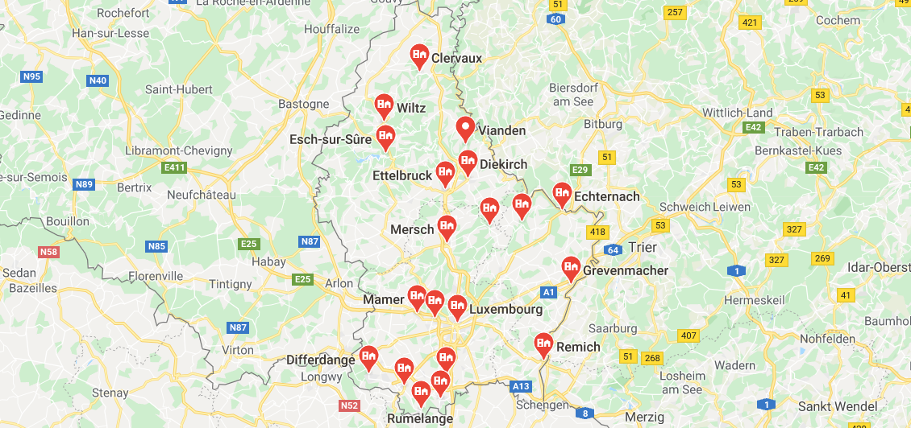

IBM Data Science Professional Certificate
DateJanuary 2020 - May 2020
RoleSolo Project
TechnologiesPython, SQL
DescriptionThe IBM Data Science Professional Certificate is a course offered on Coursera by IBM designed to teach you all of the basics of data science and machine learning topics. I learnt about topics such as data visualisation, data analysis, machine learning models, and SQL. For the final project of the course I used multiple data sources to compare the similarities of the twelve towns of Luxembourg.

Questions
The IBM Data Science Specialisation is a group of courses offered on Coursera by IBM designed to teach you all of the basic data science topics that you would be required to know to get a job in data science or machine learning.
I had to complete nine different courses:
- What is Data Science?
- Open Source Tools for Data Science
- Data Science Methodology
- Python for Data Science and AI
- Databases and SQL for Data Science
- Data Analysis with Python
- Data Visualization with Python
- Machine Learning with Python
- Applied Data Science Capstone
I went into this course having already used Python, and similarly I had some SQL experience. The most interesting parts of the course were those which I hadn't covered in great detail before. This included the Data Science Methodology course, where I looked at all stages of a data science project from business understanding to deployment.
The Luxembourg towns project was my final project of the course. The overall aim of this project was to compare the twelve towns of Luxembourg and find those which are most similar to each other. To do this I collected statistical and factual data from Wikipedia, and I collected venue data from the Foursquare API. This data was cleaned so that it could be used in an exploratory data analysis. The final steps of the project involved creating a distance matrix which could be used for finding similar towns - this similarity matrix was used to identify four unique groups within the twelve towns.